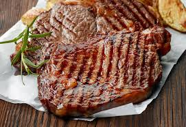

Navigate to Homepage
Steak

Steak
Steak refers to a cut of meat, most commonly beef, sliced across the muscle fibers and often including a bone. It is typically cooked quickly over high heat, like grilling or pan-searing, to achieve a flavorful crust while maintaining a desired level of doneness inside.
Ingredients
- Steak (e.g., Ribeye, New York Strip, Sirloin, Filet Mignon)
- Salt (Kosher salt or sea salt preferred)
- Black Pepper (freshly ground is best)
- Olive oil or other high-heat cooking oil (e.g., vegetable oil, canola oil, avocado oil)
- Butter (optional, for basting)
- Garlic (fresh cloves, smashed, or garlic powder)
- Fresh herbs (e.g., rosemary, thyme)
- Other spices (e.g., onion powder, smoked paprika, chili powder, cumin, red pepper flakes)
- Worcestershire sauce (optional, for marinades or flavor)
- Soy sauce (optional, for marinades or flavor)
Instructions
- Bring Steak to Room Temperature: Remove the steak from the refrigerator at least 30 minutes (and up to an hour) before cooking. This allows for more even cooking.
- Pat Dry and Season: Thoroughly pat the steak dry with paper towels. This is crucial for achieving a good sear. Season both sides generously with salt (kosher or sea salt is recommended) and freshly ground black pepper. You can also add other desired seasonings like garlic powder or dried herbs.
- Heat the Pan: Place a heavy-bottomed skillet (cast iron is ideal) over high heat. Let it preheat until it's very hot – you should see a wispy smoke or a shimmer on the surface when you add a few drops of oil. This can take 3-5 minutes.
- Add Oil: Add a high-smoke-point cooking oil (like olive oil, canola oil, grapeseed oil, or avocado oil) to the hot pan. It should shimmer immediately.
- Sear the Steak: Carefully place the seasoned steak into the hot pan. You should hear a strong sizzle. Sear the steak for 2-4 minutes per side, depending on the thickness of your steak and your desired level of doneness. Avoid moving the steak during this time to allow a crust to form.
- Add Butter and Aromatics (Optional): After flipping the steak to the second side, you can add a tablespoon or two of butter, smashed garlic cloves, and fresh herbs like rosemary or thyme to the pan.
- Baste (Optional): Tilt the pan and spoon the melted butter and aromatics over the steak continuously for the remaining cooking time. This adds flavor and helps create an even crust.
- Check for Doneness and Remove: Use an instant-read meat thermometer inserted into the thickest part of the steak. Remove the steak from the pan when it reaches these approximate internal temperatures (it will continue to cook while resting): Rare: 120-125°F (49-52°C); Medium-Rare: 130-135°F (54-57°C); Medium: 140-145°F (60-63°C); Medium-Well: 150-155°F (66-68°C); Well-Done: 160°F+ (71°C+).
- Rest the Steak: Transfer the cooked steak to a cutting board or plate and tent it loosely with foil. Let it rest for 5-10 minutes (longer for thicker cuts). This allows the juices to redistribute throughout the meat, resulting in a more tender and juicy steak.
- Slice and Serve: Slice the steak against the grain (perpendicular to the muscle fibers) and serve immediately.